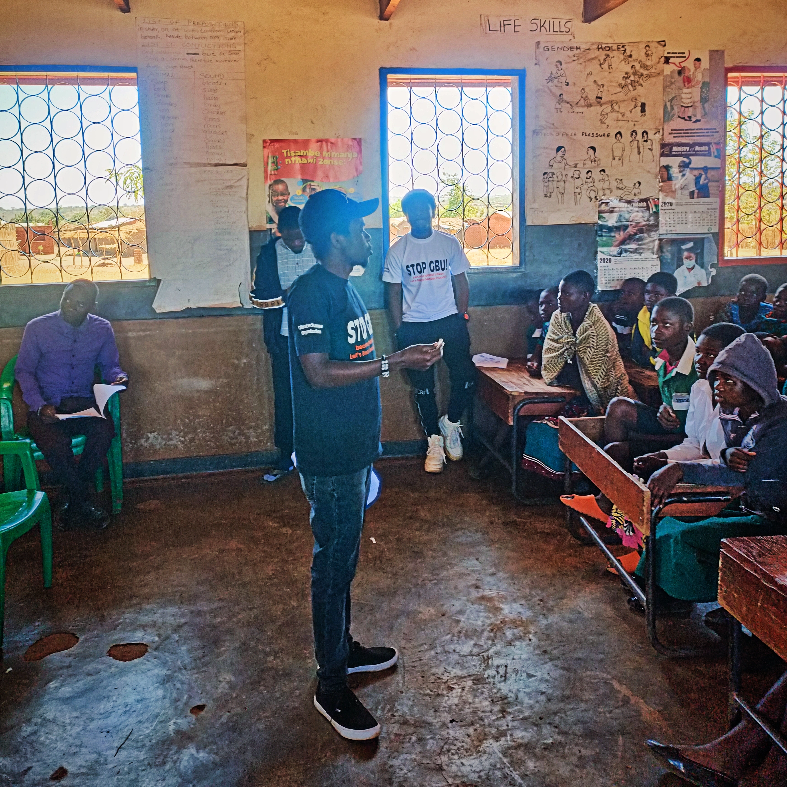
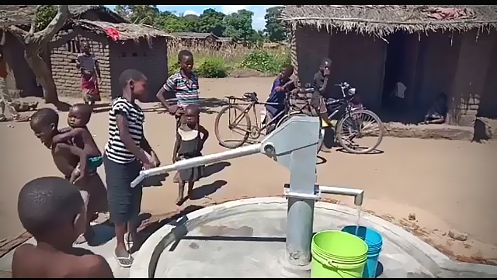

How Your Support Changes Lives and the Environment

♀Building Gender Equality and Social Inclusion
After a baseline survey revealed alarming dropout rates among young women, we launched a UNESCO-funded initiative creating safe, inspiring learning spaces. The results speak for themselves.
 Climate-Smart Agriculture
Climate-Smart Agriculture
From Hunger to Harvest in Northern Malawi
In Chitipa, one of the most remote districts in northern Malawi, farmers have suffered from unpredictable rainfall and declining soil fertility for years. Many families survived on one meal a day. Through our Farmer Field School program, we trained one hundred and twenty smallholder farmers in conservation agriculture techniques including minimum tillage, mulching, intercropping, and natural pest management. The results exceeded everyone's expectations.

💧Ending the 4km Water Journey
Before our intervention, women and girls in T/A Kasisi walked four kilometers every day to collect contaminated water from the Shire River. They faced harassment and violence along the way. Cholera outbreaks were devastating these villages. After we installed a solar-powered borehole and trained a Water Point Committee with sixty percent women, the transformation was immediate.